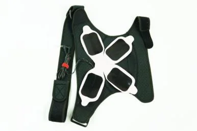

Самопомощь
Выберите область или начните со знакомства с методом.

Болит поясница
Материал о пояснице и признаках, с которыми нужна медицинская помощь.
Читать →
Болит шея
Область шеи и ограничения применения ТЭНС.
Читать →
Болит колено
Компоненты для области колена.
Читать →
Болит плечо
Форма электрода и состав комплекта.
Читать →
Первый сеанс
Знакомство с прибором, кремом и электродом.
Читать →
Кому нельзя
Ограничения и инструкция к вашей модели.
Читать →